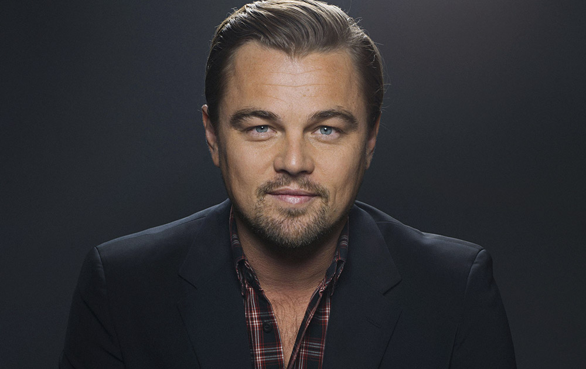

Легенды кинематографа
Актеры играют crucial роль в создании фильмов. Некоторые из них стали настоящими иконами киноиндустрии и внесли неоценимый вклад в развитие кинематографа.

Марлон Брандо
Один из самых влиятельных актеров 20 века, известный своими ролями в таких фильмах как "Крестный отец" и "Трамвай 'Желание'".
Мерил Стрип
Актриса, получившее наибольшее количество номинаций на премию "Оскар". Известна своей невероятной способностью перевоплощаться в разные роли.
Леонардо ДиКаприо
Современная звезда Голливуда, известный своими ролями в фильмах "Титаник", "Волк с Уолл-стрит" и "Выживший".